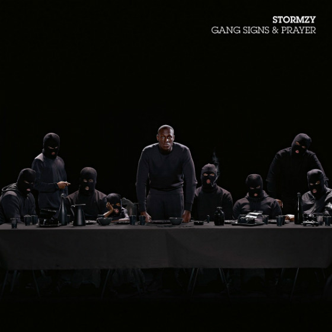

 Review Summary: Stormzy's debut is hit and miss, but when it does hit, it hits hard. An ambitious compilation of Grime, R&B, Gospel and Hip Hop.
Sitting in an arm chair with my slippers on and a cup of tea keeping me warm at 10pm on a Friday night, I can't help but get the feeling that grime, perhaps, wasn't meant for me. The very nature of the word grime paints a picture of what it has to offer as a genre, and as such it is confrontational, aggressive and unmistakable, which are all things I often enjoy in music. But, rather than confronting things like politics like Rage Against the Machine might do, grime artists often seem to just confront one another, people who've been ''chatting bare ***'', or even random strangers. This is where I begin to lose truck with it, because I'm simply more inclined to listen to something actually interesting than Afghan Dan's three minute romp about a man who's skull resembles confectionery. There's a whole roster of grime artists spinning their own take on the genre, from young blood like Little T and Soph Aspin who are best known for their ''sends'' to each other and other blackpool MCs, to more ''mature'' artists like Bugsy Malone or JME. But then enters Stormzy, arguably the biggest and baddest of the bunch. For those unfamiliar, Stormzy skyrocketed to success after a video of him performing a track in a park poetically named ''Shut Up'' blew up in 2015, and has since earned him (at the time of writing) 47.6 million views on YouTube alone. Figures like that don't come to many unsigned artists, let alone a man barely into his 20s.
Now, in 2017, Stormzy has released his debut album, Gang Signs and Prayer through his own independent record label, #Merky Records. The title immediately grabbed me, as it seemed to somehwat deviate from the naming conventions of most grime releases. I wasn't quite sure what I was expecting, but it's reminiscent of what I imagine Kanye and Kim's on-the-table names were for their children. (Disclaimer: I love Kanye West.)
The album opens with the aptly titled ''First Things First'', a rather unapologetic track where Stormzy addresses many, many, many things. Topics up for discussion range from his dedication to the music, being a bad man, what it was like before he was famous, calling people dick heads, drive by shootings, drugs, Adele, being better than other people, and a bizarre pairing of Jay Z's alias Jigga and the beginning of Puff Daddy's name, perhaps a nod to the Pokemon character Jigglypuff? Odd lyrics aside, this is a standard affair grime tune. For brief moments Stormzy gets introspective and there's a slight promise of some depth to this track, but he's very quick to return to boasting and maintaining his tough man image. So far, nothing ground breaking.
Moving on to track 2, titled ''Cold''. The production on this beat is, pardon me for saying so, ***ing sick as. The instrumental is varied and changes at regular intervals, serving synthesized melodies, deep bass lines that punch through the albeit repetitive drum beat, moving at a fast tempo, and keeping my head bouncing throughout. However, I find myself thinking about how ***ing dope the beat is a lot more when listening to this track than actually paying any mind to what Stormzy is saying. The track is about just how ''Cold'' Stormzy really is, as he proceeds to talk about how doesn't give a *** about anything or anyone, how he's not afraid of anyone but plenty of people are afraid of him, and how he is, Stormzy, champion of South London. If it wasn't for the instrumental on this one, it would be entirely forgettable, which is a shame, because the beat is really ***ing sick.
Track 3 is called ''Bad Boys'', which, is to be expected really. The track opens with a skit of sorts as a heavily aggravated gentleman addresses a group of other presumably Adidas clad gentlemen. He raises his voice, beckons for a man named Carlos, and hollers about how much of a ''bad man'' he was in jail. As much as I hate to break it to both you and Carlos, and any impressionable youths reading this, having gone to jail for unprovoked crime makes you an absolute jeb end and you should feel bad about yourself, unless that's what you mean by ''bad man'', and you're actually talking about what a deplorable individual you are. Stormzy kind of goes on to shut down this school of thought, by effectively calling this kind of person a fake, giving many examples of the behaviour a fake bad man might exhibit, such as thinking they're hard for watching Netflix original Narcos, or driving a nice car but not having the money to actually pay bills. On this track Stormzy falls into his own trap of what I call ''Shut Up'' syndrome, which appears to be a trope in grime. ''Shut Up'' Syndrome is a condition in which grime artists rhyme the same word or phrase with itself for a whole verse, or sometimes even a whole song. This time, it's the phrase ''bad boys''. Whether this is done to remind you what song you're actually listening to, or if it's just for lack of a lexicon I don't know, but I think it's *** and lazy and I hate it. Of course, Stormzy goes on to proclaim that he is the real bad boy, he calls himself a gangster, with a hard R, and talks about how he even has a knife, so it's for real. After this average first verse, we're treated to the most redeemable part of this song, a fairly catchy trap-inspired hook, which again mentions the fabled Carlos. There's then a verse delivered by some bloke named Ghetts, who does the exact same thing as Stormzy, calling everyone else a ***ing bitch, and sarcastically stating he's afraid of guns, implying that he's not, which is a real big claim for someone I've never ***ing heard of. All in all, a relatively weak track, but I've listened to it three times already so at least the chorus is good.
Track 4 is called Blinded By Your Grace, pt. 1. This song is a beautiful sucker punch because it takes what you've heard so far and tells it to *** off, but in a really nice way. This track is a simplistic, gorgeous gospel song on which Stormzy sings about presumably a woman in his life (or it's about God but I'm going to give Stormzy the benefit of the doubt and say that maybe it's both and he's written a song with two meanings), which is a nice change from always hearing about how many women a respective artist is shagging at any given time in a lot of rap and grime. Stormzy is accompanied by a couple of female voices and a synthesized organ in this track, but its not overdone, and that's what makes this track special as such a contrast from what's been presented this far into the album. Whilst he's no Freddie Mercury, Stormzy sounds very genuine on this track and I think the fact he's not a singer adds to that, because you get a sense of emotion and feeling from him which you might not get on something as crass as ''Cold.'' More of this please Stormzy, I'm about it.
Track 5 is a big ol' blast back to the first three tracks, and it's called ''Big For Your Boots''. You've probably heard it already. If ''Cold'' and ''Bad Boys'' had a child and it wasn't disciplined properly this would be it. It is pretty much a lyrical hybridization of those two tracks, where Stormzy continues to talk about how he's better than you, how he will resort to violence should you continue to be over confident, mentions Adele for the second time and you better not dare do this that your the other, or you'll get kicked. This track uses something a lot of modern pop beats do, and that is the utilization of annoying, pitch shifted vocal samples that have been remixed so heavily they're not actually words any more, and I can't think of many conventions more ***ing detestable than this. This song is, once again, standard grime.
Track 6 is called Velvet/Jenny Francis-Interlude, and I almost didn't ***ing bother with it because of it's even worse pitch shifted vocal samples. Seriously, this sample is awful, it's almost unlistenable, and whoever produced it needs a ***ing word with themself. However, when you're not being audibly assaulted by Alvin The Chipmunk's estranged brother, this is a pretty good song. The lyrics focus are about a woman who Stormzy is infatuated with, which is a topic Stormzy seems to shine on. The lyrics here are actually rather good, where Stormzy delves into metaphors and similes, albeit rather cliche at times but still, it's a very nice step up to go from ''I got the big sized toes on my feet'' to ''it feels just like velvet, a touch of the wind then it's gone''. Other than the god awful vocal sample on this instrumental, the beat is very smooth and easy going, something complimented by Stormzy's sung vocals and the accompanying female backing vocals. The hook on this track is melodic and contains the strongest of the lyrics to be found in this song, and I like it quite a lot. Good job Stormzy, gold star for you
Track 7, Mr. Skeng. I feel as though Stormzy actually just wrote several drafts of ''First Things First'', decided they were all alright, and put them on the album as their own tracks. This far into the record, there's been two themes for songs, why Stormzy is great and how other individuals are not, or how much he loves this girl. I like a good concept record, but when your concept can be summarized with the phrase ''I'm good, you're not'', you may need to stretch out a bit more. In this track, you can expect more of the same lyrically, except in this one Stormzy talks about God for a line or two, references two bible verses, and then in the next breath commands that he be called ''Gunshot Mike''. Alternatively, he would accept being called Mr. Skeng as well, but I'm not sure why you'd want that, because my vision of Mr. Skeng is an overweight secondary school P.E teacher who also covers Geography when there's no supply teachers available. The instrumental on this track is also forgettable, synthesized strings, generic drum beat. Not a particularly special one.
Track 8 goes by Cigarettes and Cush, but I'm spelling it Cigarettes and Kush, because I'm not a ***ing caveman. This song is about loving a girl, but really liking her because she's always got fags and a 20 bag on her. Stormzy sings again with a female backing vocal provided by Lily Allen on the hook, and it's fairly enjoyable. Stormzy talks about how he's perhaps made some mistakes in the relationship so far, but he vows to fix it. If I had a gram for every time I'd been told that in previous relationships and it not actually happen I'd always have kush too. The second verse in this song is performed by a lady called Kehlani, and she does a pretty stand up job, making ''passing the bong'' seem like a genuine romantic gesture. On the next Stormzy delivered verse, he talks about how he hopes God saves this girl of his, because she saved him, and its all very sweet, but it's somewhat implied that their relationship only seemed salvageable when they had some weed in, and she might not really care that much any more. I hope it works out mate.
Track 9 is another interlude track and this one is called 21 Gun Salute. Another one with an organ instrumental, but this one is actually about something different. On this song Stormzy pens a tribute to his friends, or ''bredren'' as they might be called on the road. Stormzy once again addresses God, in the hopes that divine intervention may bless his friends and he, by helping his friend with a gambling addiction or letting Stormz ''bun his zoot in peace''. There's some really subtle elements to the production on this track that flesh out it's simplistic body and make it a very pretty piece of music, such as the vocal harmonies in the chorus, or gentle bass guitar licks that hang in the background of the track. One of my personal favourites of this record.
Track 10 is Blinded By Your Grace, Pt. 2 and it's pulled a proper Spiderman 2 on it by being even better than the first one. This track is actually really, really good. Like, really good. Stormzy declares his love for God on this track in true gospel fashion and he does it very well, backed by a full band and gospel choir, with some excellent instrumentation accompanying what is a very heartfelt set of lyrics. This is the kind of thing I was hoping would be on a record called Gang Signs and Prayer, and Stormzy delivered, albeit 10 tracks into a 16 track album. If there's one thing that gives me hope for Stormzy's future as an artist, it's this song and to a lesser degree the others like it, because it proves that he's more than just a grime artist, but someone with a genuine sense of self, and I hope that he moves into this introspective direction further down the line. Excellent track on every front.
Track 11, Return of the Rucksack. This one is grime again. A repeat of some similar lyrical themes in this one, again about being better than the rest, and calling people out. However, Stormzy does acknowledge on this track that he thinks highly of his abilities, in fact, he states that he thinks he's best, and attributes that to bias. At least there's some self awareness on this one. Stormzy's delivery and rhyme scheme on this one is a bit of an upgrade from previous tracks of the same cadence, and out of all the more deeply grime tracks on this record, this one is probably my favourite. That being said, it's nothing I've not heard before, and it's nothing I've not heard before on this album.
Track 12 is called 100 Bags, and it's about Stormzy's mum. Please keep making music like this Mike mate, it's really good. Stormzy as an artist undoubtedly does his best on tracks where he's opening up and singing about things of substance. Before this song begins, there's a voice mail recording of Stormzy's mother telling him to put his faith into his Lord, and it makes you feel all good inside because it's apparent that his mother is very proud of what he's accomplished at such a young age. This track brings Stormzy into a more human light almost, and I feel reminded of the fact that he's not much older than myself, and he comes from very humble beginnings. Stormzy expresses that in this song whether he means to or not, showing his gratitude for what his mother did for him raising him as a single parent, not an easy task by any measure. He talks of how he's going to make up any mistakes he's made to her now that he's successful and can give her what she deserves. There's some lovely instrumentation on this one, with a very interesting multiple vocal layer effect in the tail end of the track. Again, it's moments on this album like this that make Stormzy great. Tell your mum you love her.
Number 13 is called Don't Cry For Me. On this track Stormzy once again opens up and talks about what it's like to grow up in South London, and decries a lot of the hardships that come with it. In the first verse Stormzy tells of friends he's lost, whether that be through losing touch or people who've sadly passed away, and he talks of the pride him and his friends share together. He also addresses an issue often not touched upon, that issue being the expectation of masculinity from men of all ages. Stormzy states that he cried when his friend passed away, as if it would be unexpected for him to do so. When surrounded by the stigma that men should hold their emotions in and never express themselves through emotional formats, deep seated issues arise, and big ups to Stormz for bringing that up. In the second verse Stormzy talks about how cutthroat the way of life can be in the place he hails from, and talks about how some of his friends are serving life sentences, stating that it's a ''burn or die'' kind of atmosphere. I feel the need to highlight the fantastic work of Rosie Danvers here, who provides the orchestral strings on this track as well as others on this album. Rosie Danvers has worked with the likes of Kanye West and Jay Z in the past, and she always does a fantastic job. The instrumentation here provides a beautifully smooth R&B track, pushing Stormzy's work out into other urban genres.
Track 14 isn't really a song. It's a phone conversation between Stormzy and and chap called Crazy Titch. Crazy Titch pretty much monologues throughout the call about Stormzy, and how he's going to take grime to being a ''first rate genre'', comparing him to Neo from The Matrix. He sings Stormzy's praises quite a lot really. To be completely honest, Crazy Titch is probably right. Grime is an interesting beast, it's one of those things that's been on the rise for the last couple of years in a big way, and more and more people from all over the UK are diving into it headfirst. At the end of the day I'm just a bit of an emo really so I'm hardly the authority on whether grime is good or not, but you've made it this far into this review so you must care a bit about what I have to say. Although its not something I'd regularly spin on my turntable, there's no denying that grime is the next big thing, anyone with half a foot of foresight could see that. I think it will really revolutionize rap music in the years to come, and I wouldn't be one bit surprised if Stormzy was at the forefront of that.
Track 15 is Shut Up. You've heard Shut Up. I don't need to talk about it whatsoever.
The final track on this album is called Lay Me Bare, and it's easily the most honest song on the record. One final message to God, Stormzy puts his blood on the page. This song reads like a man's final words, Stormzy documents his difficulties with depression and for want of a better term, lays himself bare. Stormzy thanks the people in his life who've helped him through hard times by name, and gives another very genuine performance. In the second verse of this song especially Stormzy produces a lot of emotion, and this time, genuine anger at his father who had been vacant from his life for years. Again, you get an insight into the real Stormzy on this one, perhaps more so than any other. The production on this track serves the song very well, and although it uses that vocal sampling technique I addressed earlier, I've definitely heard it put to worse effect. A very real piece of work indeed.
So, that was Gang Signs and Prayer. For a debut record from such a young man, I'd say this record is a solid achievement. For me, this record is a bit hit and miss, but when it hits, it knocks it out the ***ing park big time. The weaker tracks on this for me are easily the songs where Stormzy sticks to the rules of grime lyric writing, and I don't find that particularly enjoyable, especially when there's quite a few tracks like that on this record. Stormzy's strongest suit is when he opens himself up, and he really does that towards the end of this album, credit where credit is due, he comes out with some absolutely outstanding moments on this. If it wasn't obvious, I think the best track on this album is Blinded By Your Grace pt 2, by a long way. Coming away from this, I enjoyed this a lot more than I disliked it, and for that, this album gets a strong 3/5. Definitely worth a listen, but there's room to grow and I'm sure Stormzy will do just that. If you're into grime any way, this will likely be your Bible. Well done Stormzy.